同一个带动画的独立 SVG 文件（standalone-animated.svg），用四种方式嵌入 HTML
<defs><style> 里，
无论用 <img>、<object>、<iframe> 还是内联 <svg>，
动画都能正常播放。
因为 <style> 是 SVG 文档的一部分，浏览器渲染 SVG 时会执行其中的 CSS，与嵌入方式无关。
<img> 完全隔离，<object>/<iframe> 同域时可通过 contentDocument 访问。
<img> 标签 动画生效SVG 被当作图像资源加载。内部 CSS 动画正常播放，但完全隔离——外部 CSS/JS 无法访问内部元素，:hover 等交互不生效。

<object> 标签 动画生效SVG 作为独立文档加载。内部 CSS 动画正常播放，SVG 内的 :hover/点击交互也生效。同域时 JS 可通过 contentDocument 访问。
<iframe> 标签 动画生效SVG 作为独立文档嵌入 iframe。内部 CSS 动画正常播放，交互生效。同域时 JS 可通过 contentDocument 访问。
<svg> 动画生效SVG 标记直接嵌入 HTML DOM。内部 CSS 动画正常播放，外部 CSS/JS 可直接操作内部元素（getElementById、classList 等），交互完全可用。
| 嵌入方式 | 内部 CSS 动画 | 外部 JS 控制 | 外部 CSS 样式 | :hover/交互 | 适用场景 |
|---|---|---|---|---|---|
| 直接打开 .svg | ✅ | — | — | ✅ | 独立文件分发 |
| <img src> | ✅ | ❌ | ❌ | ❌ | GitHub README、文档插图 |
| <object data> | ✅ | ⚠️ 同域 | ❌ | ✅ | 嵌入交互 SVG |
| <iframe src> | ✅ | ⚠️ 同域 | ❌ | ✅ | 沙箱嵌入 |
| 内联 <svg> | ✅ | ✅ | ✅ | ✅ | Studio、Steps HTML 播放器 |
<defs><style> 里，用户用 <img> 嵌入 GitHub README、双击打开、<object> 嵌入网页——动画都能播放。这是最通用的格式。getElementById 直接操作 SVG 元素，切换 class 触发帧间过渡动画。CSS 仍内嵌在 SVG 的 <defs><style> 中。<object> + contentDocument，均可实现 JS 控制。